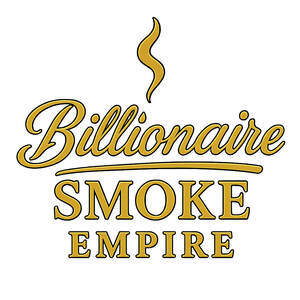

Trade Mark Journal No.2025/030 25 July 2025
UK00004232788 11 July 2025 (9,24,25,35,40,41)

- Class 9
- Downloadable digital music; Digital music players; Digital music downloadable from the Internet; Digital recordings; Digital recording media; Digital music downloadable provided from the internet; Music recordings; Audio digital discs; Digital music downloadable provided from MP3 internet websites; Music headphones; Musical video recordings; Reflective apparel and clothing for the prevention of accidents.
- Class 24
- Printed textile piece goods; Printed fabrics; Printed textile labels; Textile goods, and substitutes for textile goods; Textile piece goods; Piece goods (Textile -); Fabrics [piece goods]; Textile piece goods made of plastics materials; Textile piece goods made of cotton; Waterproofed textile piece goods; Non-woven piece goods; Tissues being textile piece goods; Piece goods made of textile materials bonded with plastics; Coated fabrics for use in the manufacture of leather goods; Fabrics being textile piece goods for use in manufacture; Piece goods made of textile materials bonded with rubbers; Fabrics being textile piece goods; Textile piece goods for clothing; Piece goods made of woven plastic material; Textile piece goods for use in the manufacture of shoes; Textile fabric piece goods for use in the manufacture of clothing; Tartan piece goods; Non-woven textile piece goods; Furnishing fabrics being textile piece goods; Piece goods made of non-woven plastic material; Curtaining material being textile piece goods; Breathable piece goods made of textile materials bonded with plastics; Textile piece goods for use in the manufacture of boots; Fabrics being textile goods in roll form; Textile piece goods for making-up into towels; Textile goods for use as bedding; Textile piece goods for furnishing purposes; Breathable piece goods made of textile materials bonded with rubber; Synthetic textile piece goods; Fabrics being textile piece goods for use in embroidery; Household textile piece goods; Textile piece goods for use in the manufacture of protective clothing; Textile piece goods for making-up into clothing; Calico cloth (Printed -); Printed calico cloth; Printing blankets of textile material; Textile fabric piece goods for the manufacture of upholstered furniture; Textile piece goods for making bedding covers; Textile piece goods for making into clothing; Household textile goods; Laminated textile piece goods having insulating properties; Fabrics of man-made fibres being textile goods in piece form.
- Class 25
- Clothing; Knitwear [clothing]; Jackets [clothing]; Ready-to-wear clothing; Woolen clothing; Furs [clothing]; Garments for protecting clothing; Clothing layettes; Layettes [clothing]; Linen clothing; Headbands [clothing]; Headbands for clothing; Gloves [clothing]; Gloves as clothing; Clothes; Aprons [clothing]; Maternity clothing; Kerchiefs [clothing]; Jerseys [clothing]; Denims [clothing]; Shorts [clothing]; Cashmere clothing; Capes (clothing); Oilskins [clothing]; Gabardines [clothing]; Leather clothing; Clothing of leather; Leather (Clothing of -); Silk clothing; Collars [clothing]; Parts of clothing, footwear and headgear; Veils [clothing]; Knitted clothing; Windproof clothing; Hoods [clothing]; Corsets [clothing, foundation garments]; Embroidered clothing; Wristbands [clothing]; Belts [clothing]; Belts for clothing; Bandeaux [clothing]; Waterproof clothing; Rainproof clothing; Casual clothing; Visors [clothing]; Jackets being sports clothing; Stuff jackets [clothing]; Bottoms [clothing]; Playsuits [clothing]; Clothing for leisure wear; Ready-made clothing; Latex clothing; Trunks being clothing; Woven clothing; Infant clothing; Drawers [clothing]; Leisure clothing; Clothing for sports; Sports clothing; Drawers as clothing; Ties [clothing]; Athletic clothing; Clothing for children; Muffs [clothing]; Bodies [clothing]; Clothing for babies; Tops [clothing]; Clothing for infants; Clothing for cycling; Weatherproof clothing; Fabric belts [clothing]; Pockets for clothing; Water-resistant clothing; Triathlon clothing; Clothing for skiing; Handwarmers [clothing]; Beach clothing; Thermal clothing; Chaps (clothing); Cowls [clothing]; Men's clothing; Fishing clothing; Braces for clothing; Mitts [clothing]; Dance clothing; Gloves for apparel; Sportswear; Sports garments; Sports clothing [other than golf gloves]; Footwear for sports; Sports footwear; Footwear; Golf clothing, other than gloves; Athletic footwear; Plush clothing; Clothing for gymnastics; Quilted jackets [clothing]; Outerwear; Mufflers [clothing]; Athletics footwear; Clothing for wear in wrestling games; Clothes for sports; Shoes for leisurewear; Articles of sports clothing; Women's clothing; Footwear for women; Footwear for men; Footwear for sport; Footwear for use in sport; Footwear [excluding orthopedic footwear]; Leisure footwear; Footwear for snowboarding; Golf footwear; Moisture-wicking sports shirts.
- Class 35
- Retail services connected with the sale of clothing and clothing accessories; Retail services in relation to clothing accessories; Mail order retail services for clothing accessories; Retail store services in the field of clothing; Company record keeping [for others]; Employee record services; Business records management; Promoting the sale of goods and services of others through the distribution of printed material and promotional contests; Goods or services price quotations; Distribution and dissemination of advertising materials [leaflets, prospectuses, printed material, samples]; Presentation of goods and services; Advertising services relating to the sale of goods.
- Class 40
- Printing of photographic images from digital media.
- Class 41
- Music recording; Music publishing; Publishing of music; Production of sound and music recordings; Production of music; Music production; Publication of music; Music mixing services; Live music services; Entertainment; Television entertainment; Cinema entertainment; Musical entertainment; Radio entertainment; Live entertainment; Production of audio entertainment; Record mastering; Production of record masters; Record masters (Production of -); Record master production; Rental of records or recorded magnetic audio tapes for language training; Recording of music; Recording studio services for the production of sound bearing discs; Rental of audio tapes bearing recorded music; Rental of records or sound-recorded magnetic tapes; Recording studios; Rental of records, compact discs or pre-recorded magnetic tapes; Music recording studio services; Sound recording studios.
Nki Oyere Otang Ebot